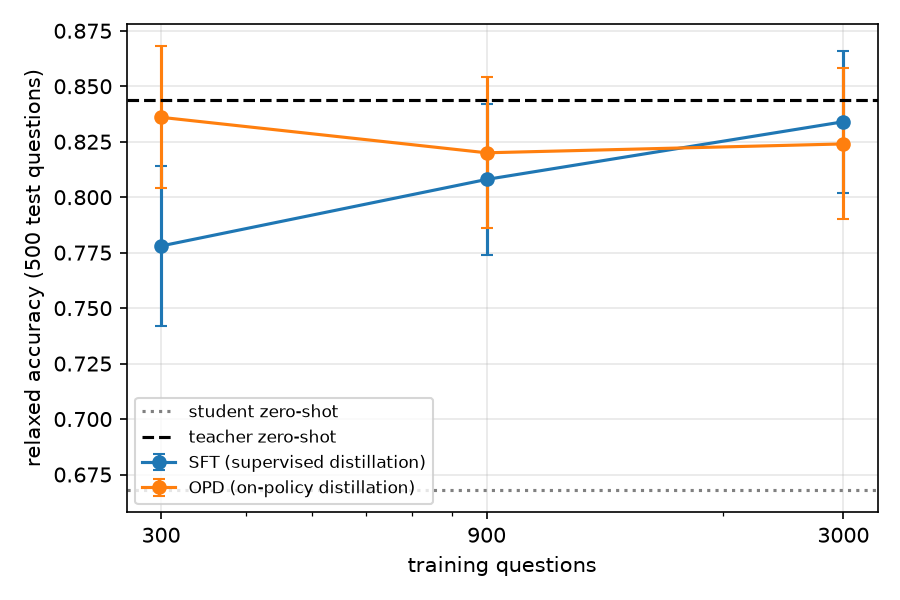

On-Policy Distillation for Vision-Language Reasoning
Transferred on-policy distillation (DAgger-style, per-token KL to a teacher on the student's own rollouts) to Qwen3-VL on ChartQA. A 2B student trained on 300 questions matches supervised distillation on 3,000 (+5.8 points at equal data, paired 95% CI excludes 0), and a token-level analysis shows the teacher's feedback lands on answers and format before chart values.